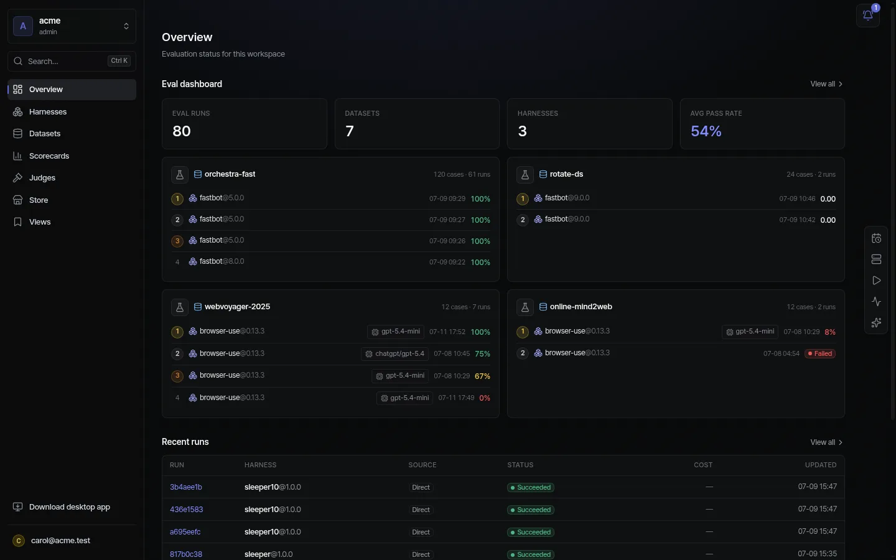
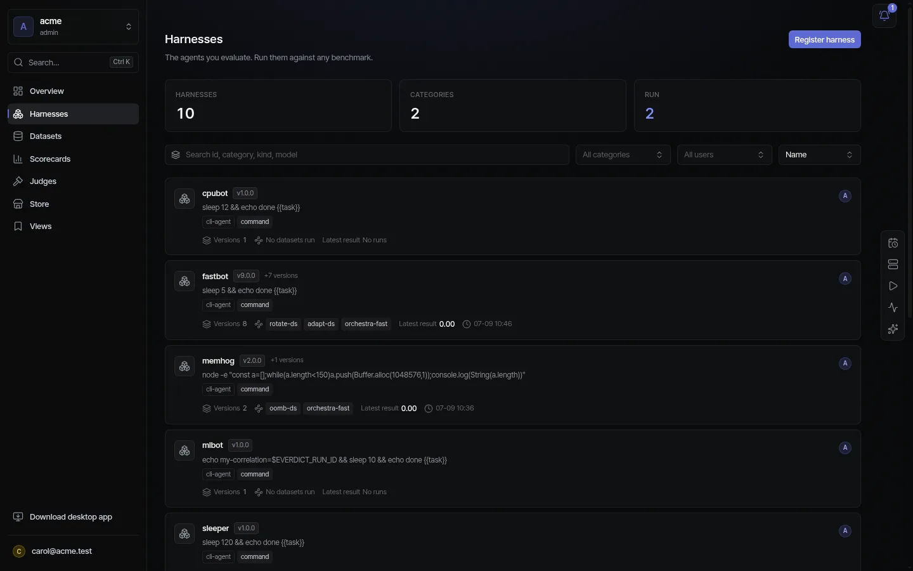
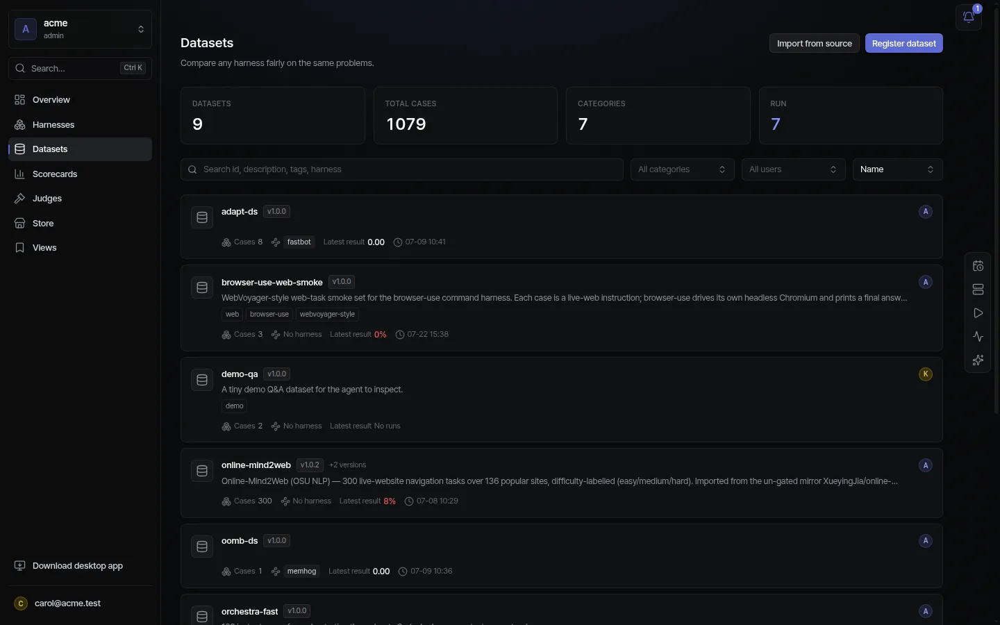
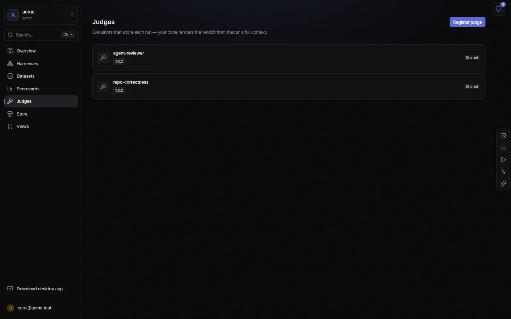
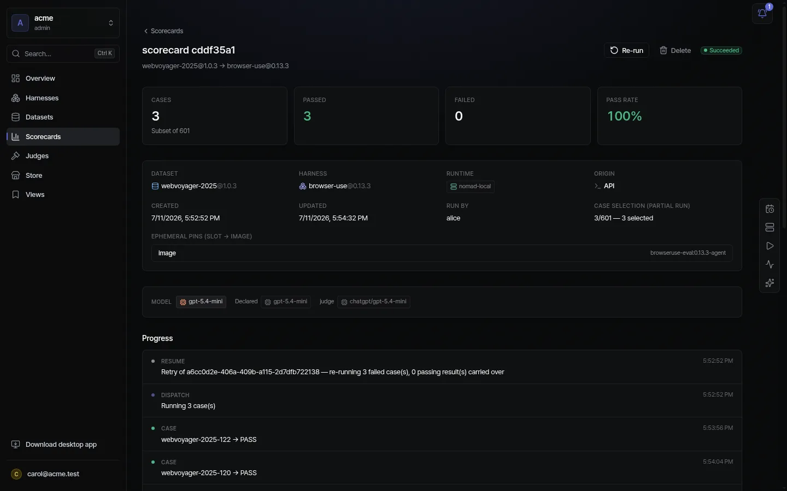

Everdict is a self-hosted evaluation platform for AI agents. You register the agent you already built, run it against a dataset, and get a scored, reproducible verdict — better or worse than the last version, and why.
The domain map
Everything in Everdict is one of a handful of entities. Five of them are registered and versioned; one run combines them; the results roll up into verdicts. Click any entity to jump to its page.
REGISTRY — versioned · immutable · shared per workspace
Harness — the agent under testDataset — the cases to testJudge — how to scoreModel — LLM + keyRuntime — where to run
every entity: (workspace, id, version) — a scorecard pins exact versions, so results reproduce
combine
EVALUATE — a Scorecard = Dataset × Harness, judged
Scorecard — the batchRun — one case, isolatedtrace · snapshot · scores
each case dispatches to a Runtime → the agent acts → its trace + result are scored by graders & judges
roll up
VERDICT — what you actually wanted to know
pass rate · mean score · cost · latencydiff baseline ↔ candidateleaderboard harness × model
Peoplethe web dashboard (below) & the desktop app
Agents & CIthe MCP server + HTTP API — same operations, role-gated
Your platformstraces pull from / export to MLflow · Langfuse · OTel …

The workspace overview — every screenshot in these docs is the real product, self-hosted.
Why teams use it
Know if it got better — score every version, diff baseline ↔ candidate, catch regressions before they ship.
Any agent, any framework — Claude Code, Codex, LangGraph, any CLI or multi-service topology. No rewrite.
Defensible numbers — deterministic graders + judge verdicts with reasoning, over full traces, reproducible by pinned versions.
Your infrastructure — fully self-hosted on your Nomad / K8s / Docker; air-gap capable; Apache-2.0.
Register it in the web (Harnesses → New), via POST /harnesses, or the register_harness MCP tool. Traces normalize into one TraceEvent stream regardless of platform, so cost / steps / tool calls compare across frameworks.
Versions are the point
Versions are immutable; latest resolves by semver. Change a prompt → new version → run the same dataset → diff the two scorecards. That's the whole workflow.

Harness list — each card is an id with its version history.
Domains / Datasets
Datasets
A dataset is what to test — a versioned bundle of eval cases, independent of which agent runs them. One dataset, many harnesses: that's what makes scores comparable.
Related
crossed with a Harness to produce a Scorecard
its cases carry per-case graders and expected ground truth for Judges
fixtures seed world-state into a service harness's data stores per case
An eval case
task
The instruction the agent receives.
env
The world it acts on — a repo seed, a browser start URL, a prompt-only shell.
expected
Ground truth, when there is one — adapters emit run-time graders from it.
graders
How this case is scored, applied at run time.
fixtures
Per-case world-state seeded into data stores (service harnesses).

Datasets — imported benchmarks and hand-authored suites, versioned like everything else.
Bring a benchmark
Import open benchmarks — SWE-bench, GAIA, WebArena, τ-bench, WebVoyager, OSWorld, terminal-bench — or any Hugging Face dataset, and map its fields onto cases. The scorecards you saw in the overview run WebVoyager subsets against a browser agent.
i
Subsets are first-class. Run 3 of 601 cases while iterating, the full set for the real verdict — the scorecard records exactly which selection ran.
Domains / Judges & graders
Judges & graders
Scoring is fully separate from the harness. Deterministic graders measure what's mechanical; judges give a verdict — with written reasoning — where there's no crisp ground truth.
Related
selected per Scorecard; applied to every case's trace + snapshot
a model judge calls a registered Model (with the workspace's key)
can also score ingested traces from your observability platform — no harness run
Deterministic graders
tests-pass
Run a command against the result — ground truth for coding tasks.
cost · steps · latency
Read straight from the trace. Economy and stability, not just correctness.
store-state
Diff a post-run data-store slice against the expected world state.
Judges — verdicts with reasoning
A judge is registered code (Python / Node, following the grader contract) that reads the run's full context and emits scores — usually by calling an LLM or VLM. Its reasoning is stored next to the number; you saw it on the run detail: "The agent used arXiv and reported a concrete set of latest preprints… This satisfies the task as stated."

Judges — versioned evaluators, shared across the workspace.
✓
Multi-metric: one judge call can emit many named scores (judge:<id>:<criterion>) — and pass@k trials capture non-determinism across repeats.
Domains / Scorecards
Scorecards
The scorecard is the unit of verdict: one dataset × one harness version, every case run and judged, rolled into numbers you can compare, diff, and rank.
Related
combines a Dataset × a Harness version, with selected Judges, on a chosen Runtime
each case is a Run — trace, snapshot, and scores attached
rolls up into diff (baseline↔candidate), leaderboard (harness×model), and trends
Scorecards — every row is dataset × harness @ versions, with its models, judge, scores, and status.
Anatomy of one scorecard
Pass counts, the exact dataset/harness/runtime/versions it ran with, image pins, the models involved (including the judge's), and a live progress timeline per case:

Scorecard detail — 3/3 passed on a WebVoyager subset; note the pinned image and the per-case PASS timeline.
Diff, leaderboard, re-run
Diff — GET /scorecards/diff?baseline=…&candidate=…: exactly which cases improved or regressed between two versions.
Leaderboard — rank harness × model combinations across one dataset.
Re-run — all cases or failures-only, with the original settings pre-filled.
Schedules — cron re-runs (Temporal) for drift watch.
Score traces you already have
No harness run needed: push a TraceEvent[], or pull from MLflow / Langfuse / OTel by run id — then judges score them like any other case, and results can export back to your platform.
Domains / Runtimes & runners
Runtimes & runners
A runtime is where evals execute — always your compute. Register a cluster once, or turn any laptop / CI box into a runner.
Related
chosen per Scorecard (or per run) — nomad-local in the screenshots
isolation comes from your orchestrator's runtime (gVisor / Kata) — Everdict places, your infra sandboxes
cluster auth resolves from workspace Secrets, stripped from the job env
Kind
Placement
local
In-process on the control-plane host — dev and single runs.
nomad
Dispatch to your Nomad cluster (runsc isolation supported).
k8s
A K8s Job with runtimeClassName (gVisor / Kata).
self:<id>
Your own machine as a paired runner — desktop one-click, or CLI for headless.
Fairness & safety built in
The scheduler is capacity-aware and tenant-fair (weighted fair queueing), with queue backpressure, per-tenant budgets, and trust-zone isolation — so many teams share one control plane safely.
Humans log in via Keycloak SSO; agents hold API keys or OAuth tokens scoped to the same roles — there is no separate "bot" permission model to reason about.
Models
Register an LLM endpoint + key once (Settings → Models) and bind it by name in harnesses and judges — the key itself stays in the secret store and is injected only at dispatch.
CI integration
Connect a GitHub repo to a harness and every PR builds the image, evaluates it, and reports the score — keyless, via GitHub Actions OIDC federation. Merges re-pin a new immutable version automatically.
Self-hosting / Deploy with Docker
Deploy with Docker
Everdict ships three Compose profiles. Everything runs on your own machines — no vendor sandbox, no data egress.
Dev — hot reload, no auth
$ docker compose -f deploy/compose/docker-compose.dev.yaml up --build
# web :3001 · API :8787 · in-memory stores · auth off$ curl localhost:8787/healthz
Prod — Postgres, persistent, hardened
Built artifacts only, automatic DB migrations, health checks, restart: unless-stopped. Pulls prebuilt GHCR images by default.
$ cp deploy/compose/.env.example deploy/compose/.env
# edit .env — at minimum set POSTGRES_PASSWORD$ docker compose -f deploy/compose/docker-compose.prod.yaml \
--env-file deploy/compose/.env up -d
The prod profile ships without auth — it runs as tenant=default on a trusted network. Turn on Authentication or front it with a proxy before exposing it anywhere public.
Self-hosting / Configuration
Configuration
Everything is environment variables in deploy/compose/.env. Generate secrets with openssl.
Workspace-level model keys don't go in env — register them in Settings → Models so they're encrypted, scoped, and injected only at dispatch.
Self-hosting / Authentication
Authentication
Humans authenticate with Keycloak (OIDC); agents and CI use API keys — both resolve to the same Principal{workspace, roles}.
Programmatic only (agents / CI)
# in .env
EVERDICT_REQUIRE_AUTH=1
EVERDICT_INTERNAL_TOKEN=<openssl rand -hex 32># mint a workspace's first key$ curl -X POST localhost:8787/internal/tenant-keys \
-H "x-internal-token: $EVERDICT_INTERNAL_TOKEN" \
-H "content-type: application/json" -d '{"workspace":"acme"}'
Human SSO with Keycloak
The full stack auto-imports the everdict realm: roles viewer/member/admin, the everdict-web client, a workspace claim, demo users.
# API
KEYCLOAK_ISSUER=http://localhost:8080/realms/everdict
EVERDICT_REQUIRE_AUTH=1
# web — apps/web/.env.local
KEYCLOAK_ISSUER=http://localhost:8080/realms/everdict
KEYCLOAK_CLIENT_ID=everdict-web
KEYCLOAK_CLIENT_SECRET=everdict-web-secret
AUTH_SECRET=<openssl rand -base64 32>
MCP OAuth ("login like Linear")
$ bash deploy/keycloak/enable-mcp-dcr.sh
Enables anonymous Dynamic Client Registration (loopback-only) so MCP clients self-register and run OAuth 2.1 + PKCE in the browser.
i
Serving over Tailscale / a LAN? Point API_PUBLIC_URL / WEB_BASE_URL / AUTH_URL at the reachable host and add it to the realm's redirectUris & webOrigins.
Self-hosting / Run on your own infra
Run on your own infra
Evals run where you place them — a laptop, a CI box, or your own Nomad / Kubernetes. The screenshots in these docs ran on nomad-local.
A self-hosted runner (this machine)
# 1 · mint an API key$ ak=$(curl -s -H "Authorization: Bearer <existing-key>" -X POST \
localhost:8787/keys -H "content-type: application/json" \
-d '{"label":"runner"}' | jq -r .apiKey)
# 2 · pair a runner (rnr_ token shown once)$ rnr=$(curl -s -H "Authorization: Bearer $ak" -X POST \
localhost:8787/runners -H "content-type: application/json" \
-d '{"label":"my-laptop","os":"linux","capabilities":["git","docker"]}' | jq -r .token)
# 3 · run it$ everdict runner --pair$rnr--api-url http://localhost:8787 --max-concurrent 2
Submit with "runtime": "self:<id>", or pick "My local host" in the web. Personal machines pair one-click from the desktop app (token in the OS keychain). Your login pays the model cost; a provenance tag marks the result.
Kubernetes is the same shape — "kind":"k8s" with server, namespace, runtimeClass (gVisor / Kata). The cluster token lives in workspace Secrets (authSecret references it by name) and never reaches job env.
Reference / CLI
CLI
The everdict CLI is the dev / single-run control plane, the suite runner, and the self-hosted runner.
Batch scorecards, diffs, leaderboards, datasets, judges, and runtimes are control-plane operations — drive them from the web, the HTTP API, or the MCP tools (full parity).
Reference / MCP & API
MCP & API
Agents and CI drive Everdict over an OAuth-protected MCP server at POST /mcp — the same operations as the web, role-gated and workspace-scoped.